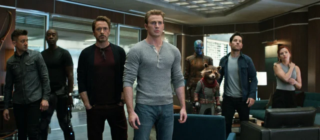

Aviso: O texto a seguir procura evitar revelar qualquer spoiler do
filme. No entanto, se preferir não ter qualquer informação sobre a
trama, incluindo detalhes dos trailers e da sinopse oficial, é
aconselhável ler o texto após assistir ao filme da Marvel.
Mais do que qualquer obra anterior do Universo
Cinematográfico Marvel, Vingadores: Ultimato convida a refletir sobre a
maneira como as fantasias de super-heróis abordam nosso temor em lidar
com a morte. Os personagens possuem habilidades extraordinárias, que
inicialmente poderiam garantir uma chance de sobrevivência maior do que
a dos seres humanos comuns. Contudo, os protagonistas enfrentam ameaças
constantes, combatendo adversários igualmente poderosos. Nos quadrinhos,
heróis morrem com frequência – e também retornam à vida, em decorrência
de magias e avanços tecnológicos.
Essas produções exploram
simultaneamente a ideia da vida eterna – Thor (Chris Hemsworth), por
exemplo, tem mais de 1000 anos – e a necessidade de estar preparado para
a morte a qualquer momento. Os superpoderes dos personagens são uma
bênção e uma maldição: tornam-nos admiráveis, ídolos, mas também alvos
em potencial. Alguns estudiosos de psicologia do cinema argumentam que
as imagens proporcionam ao espectador uma experiência simbólica para
lidar com situações que não enfrentaria na vida real – por exemplo, não
temos o direito de tirar a vida de alguém, mas podemos assistir a um
filme de terror e "simular" essa experiência. O mesmo princípio se
aplica à oscilação entre vida e morte, heroísmo e sacrifício exigida
pelas produções baseadas em histórias em quadrinhos.

Mais do que apenas inserir easter eggs e pontuar a narrativa com fan
service, o filme em si é um grande fan service. Ele foi criado para
garantir que os produtores não esqueceram nenhum personagem, não
deixaram nenhum filme de lado e amarraram todas as pontas soltas da Fase
3 do MCU. Em uma notável demonstração de montagem, cada herói tem seu
momento de destaque, e cada cena mantém um equilíbrio tonal: piadas
surgem no meio de um funeral, revelações tristes ocorrem em plena
batalha, e momentos de ação irrompem durante tiradas cômicas. Embora
Ultimato não inove na proposta cinematográfica, com música nos momentos
esperados e reservando o grande confronto para o clímax, ele se destaca
pelo refinamento do produto oferecido.
O resultado é
extremamente eficaz dentro das regras estabelecidas pela própria Marvel,
apresentando imagens polidas, atuações marcantes (notavelmente de Robert
Downey Jr.), e efeitos visuais e sonoros impecáveis. Este é o produto de
uma indústria que precisa, simultaneamente, honrar fórmulas de sucesso e
oferecer ao espectador algo que pareça novo e autêntico. Vingadores:
Ultimato reverencia o patriotismo americano, mas também se abre à ideia
de fraternidade internacional; coloca os heróis masculinos no centro da
trama, mas inclui acenos à liderança feminina; desenvolve histórias de
amor entre heróis e suas amadas, e menciona com naturalidade um romance
gay; privilegia os personagens brancos, mas não deixa de destacar a
importância de Don Cheadle, Anthony Mackie e o elenco de Pantera Negra.
No final, o filme será lembrado menos por suas reviravoltas
e batalhas – que, analisadas individualmente, não diferem tanto de cenas
equivalentes dos filmes anteriores – e mais pelo culto em torno das
marcas Vingadores e Marvel. Ultimato quebrou recordes de bilheteria
antes mesmo de sua estreia, assim como A Era de Ultron (2015) e Os
Vingadores (2012) fizeram em seus respectivos anos de lançamento. A
mídia está repleta de notícias sobre sessões esgotadas, críticas
excepcionalmente positivas, gadgets inéditos e produtos derivados das
imagens dos heróis. Especulações de todos os tipos surgem sobre
possíveis desdobramentos da trama, enquanto pequenos comerciais de TV
divulgados na Internet atraem milhões de curiosos.
 Enquanto proposta de reconforto, nada mais eficaz do que este mastodonte
cinematográfico com todos os personagens, cenas, efeitos e reviravoltas
que se esperaria dele. “Você vai rir e chorar”, diziam os reclames dos
espetáculos de antigamente, e é exatamente isso que se encontrará aqui.
Os Vingadores converteram seu público em “seguidores”. Dentro da sessão
de imprensa, que costuma ser menos emotiva do que as exibições ao
público, os jovens jornalistas choravam, riam, comemoravam, gritavam “É
isso aí!”, “Agora sim!”. No final, um acontecimento inédito: dezenas de
críticos corriam para comprar baldes do Thanos e cartazes em miniatura
do filme, sacando seus cartões de crédito no instante em que saíam sala
e se depararam com os brindes. Estes jornalistas também se transformam
em consumidores, colecionadores da marca preciosa da cultura
contemporânea. Eles são os verdadeiros enfeitiçados - o encantamento
opera do outro lado da tela. Este é o aspecto mais curioso do filme: sua
inserção social, seu impacto extra-filme. Ultimato fascina sobretudo
enquanto objeto de adoração.
Enquanto proposta de reconforto, nada mais eficaz do que este mastodonte
cinematográfico com todos os personagens, cenas, efeitos e reviravoltas
que se esperaria dele. “Você vai rir e chorar”, diziam os reclames dos
espetáculos de antigamente, e é exatamente isso que se encontrará aqui.
Os Vingadores converteram seu público em “seguidores”. Dentro da sessão
de imprensa, que costuma ser menos emotiva do que as exibições ao
público, os jovens jornalistas choravam, riam, comemoravam, gritavam “É
isso aí!”, “Agora sim!”. No final, um acontecimento inédito: dezenas de
críticos corriam para comprar baldes do Thanos e cartazes em miniatura
do filme, sacando seus cartões de crédito no instante em que saíam sala
e se depararam com os brindes. Estes jornalistas também se transformam
em consumidores, colecionadores da marca preciosa da cultura
contemporânea. Eles são os verdadeiros enfeitiçados - o encantamento
opera do outro lado da tela. Este é o aspecto mais curioso do filme: sua
inserção social, seu impacto extra-filme. Ultimato fascina sobretudo
enquanto objeto de adoração.